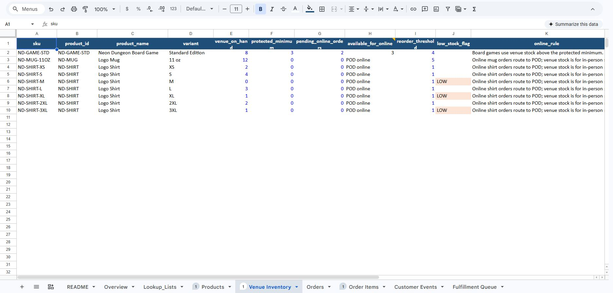
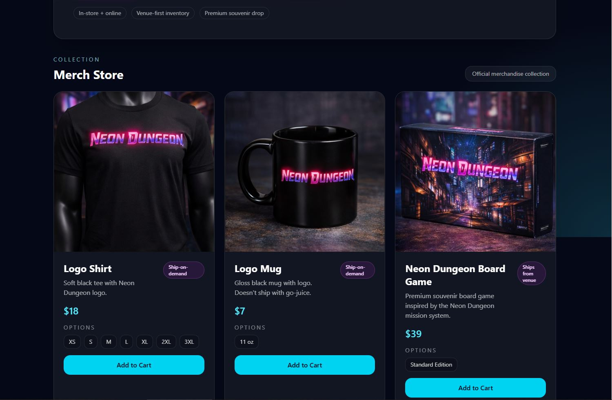
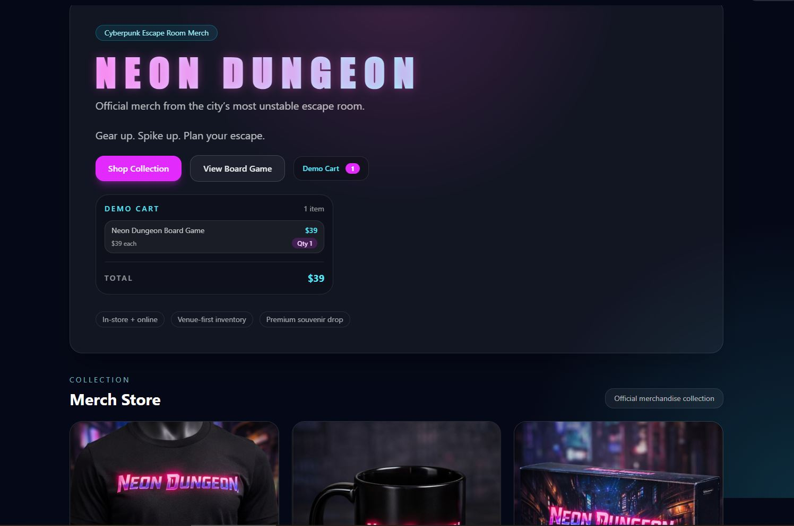
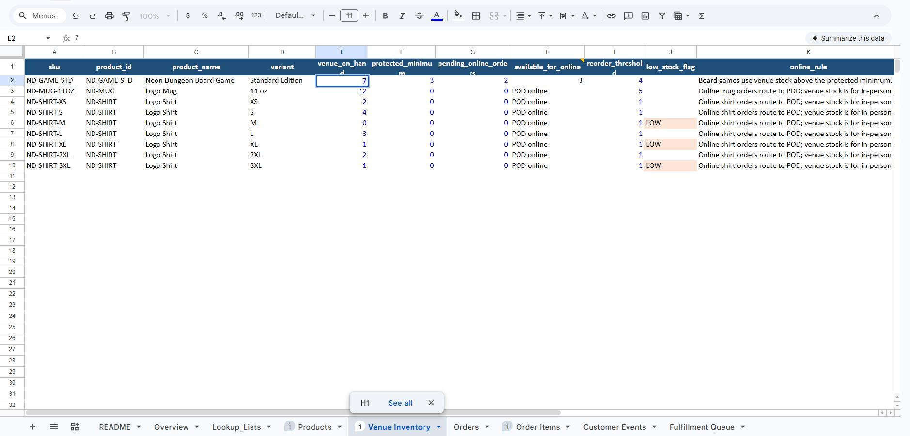
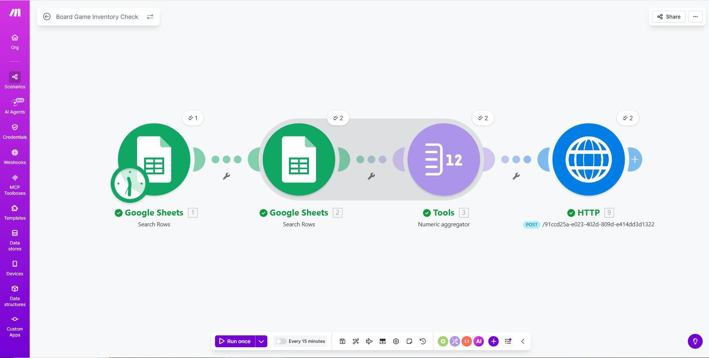

Neon Dungeon Inventory Automation Demo
A storefront-to-operations prototype showing how a customer order can connect to inventory rules and automation logic.
The Problem
Small businesses often manage sales, inventory, and follow-up work across disconnected tools. That creates manual checking, missed updates, and workflow clutter.
1. Inventory Tracker
Google Sheets acts as the operational source of truth for product stock, fulfillment rules, reorder thresholds, and low-stock flags.

2. Storefront Prototype
The customer-facing storefront shows merch products, variants, pricing, and fulfillment type.

3. Demo Cart
The demo cart shows a customer order for one Neon Dungeon Board Game. This item is treated as venue-stock merchandise, so it is the product used to demonstrate inventory tracking.

4. Inventory Reflection
For the prototype handoff, the order is reflected in the inventory tracker. The board game row tracks stock, protected minimum, pending online orders, available online quantity, reorder threshold, and fulfillment rule.

5. Automation Workflow
Make checks the board game inventory data in Google Sheets, aggregates the relevant quantity values, and sends the result to an HTTP endpoint. This represents the operational handoff: once inventory data is checked, the system can trigger a notification, reorder action, or vendor follow-up.

What This Proves
This prototype demonstrates a complete business workflow pattern: customer-facing interface, spreadsheet-based operations data, inventory rules, and an automation layer for follow-up actions.
This is a proof of concept, not a production checkout system. Some handoffs are simulated to show the workflow clearly.